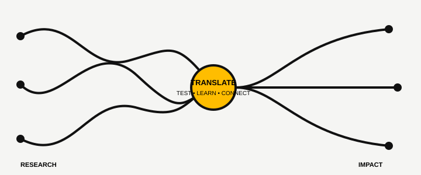
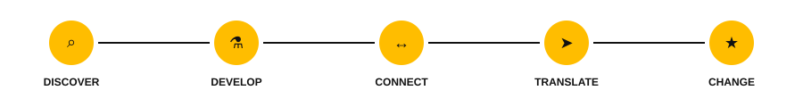
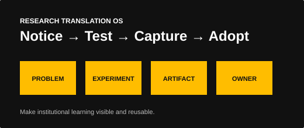

Move research toward use.
UWM TRANSLATE is a four-year initiative to strengthen how the University of Wisconsin–Milwaukee connects research, people, industry, and pathways to impact.
Explore the initiative
Research translation is a system.
Moving discoveries toward use depends on more than individual projects. It requires strong industry connections, practical translation skills, clear pathways, aligned incentives, and institutional capacity that persists over time.
Industry Pull
Connect researchers with real problems, decision-makers, and long-term external partnerships.
System + Culture
Improve policies, incentives, skills, roles, and handoffs that shape translation across UWM.
STRP Pipeline
Identify, de-risk, and advance promising research through milestone-based translation pathways.

Explore the Research Translation Operating System.
See how research translation works at UWM, what we are testing, what we are learning, and what you can reuse.
Explore the operating system →
Experiment
Use TRANSLATE activities and STRPs to test practical changes in real settings.
Learn
Capture evidence about what helps, what creates friction, and what needs to change.
Institutionalize
Move useful policies, processes, tools, and capacity into permanent UWM ownership.